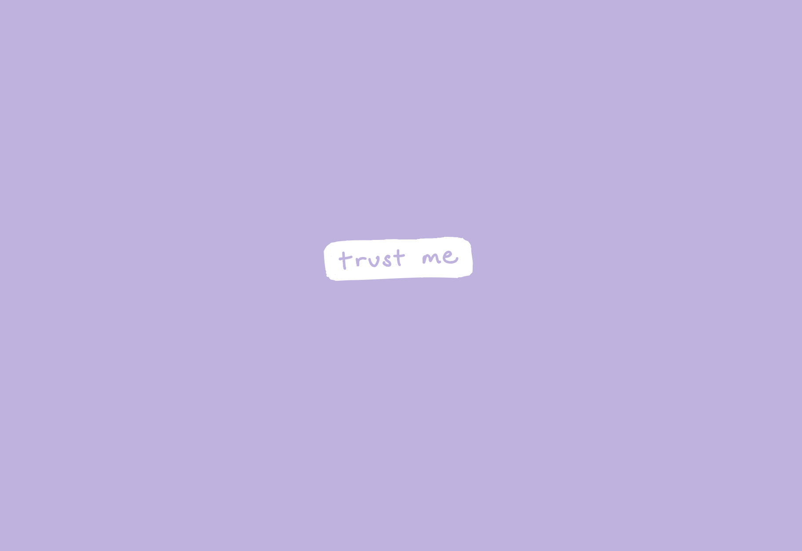

-
Using the favorite website you chose in homework 1, create a wireframe for one page of it using pen/paper, PowerPoint, or any your tool of choice. (use the 'img' tag!) Make sure to let us know what the name of your website is (Use the 'p' tag!)
https://matias.ma/nsfw/

-
Try to improve the website you've chosen, and create a redesigned wireframe of one page for the same website using the principles of visual hierarchy that you learned from the article.

-
What is the goal of the website? Who is it intended for? How does the design accomplish this? Write 2-3 sentences answering these questions. (Use the 'p' tag again!)
It's just a fun little "click-bait" type of website to send to friends! The first page accomplishes this perfectly, featuring a single button that says "Trust me" and transforms into a dancing Ditto upon a user-inputted mouse click.
-
Write 2-3 sentences about what problems your redesign addressed, and how it solved them.
The main problem that I can pinpoint involves the colors and fonts used in the first page of the website. For a website that is meant to be fun and friendly, the harsh dark purple on black contrast is distasteful and potentially decreases the likelihood of people clicking on the button. To resolve this, I chose a pastel purple as the background and a button with rounder edges to soften the appearance of the page.
NOTE: Make sure to include the wireframe images in the website and don't just put it in your assets folder!
Your wireframes should look something like this: